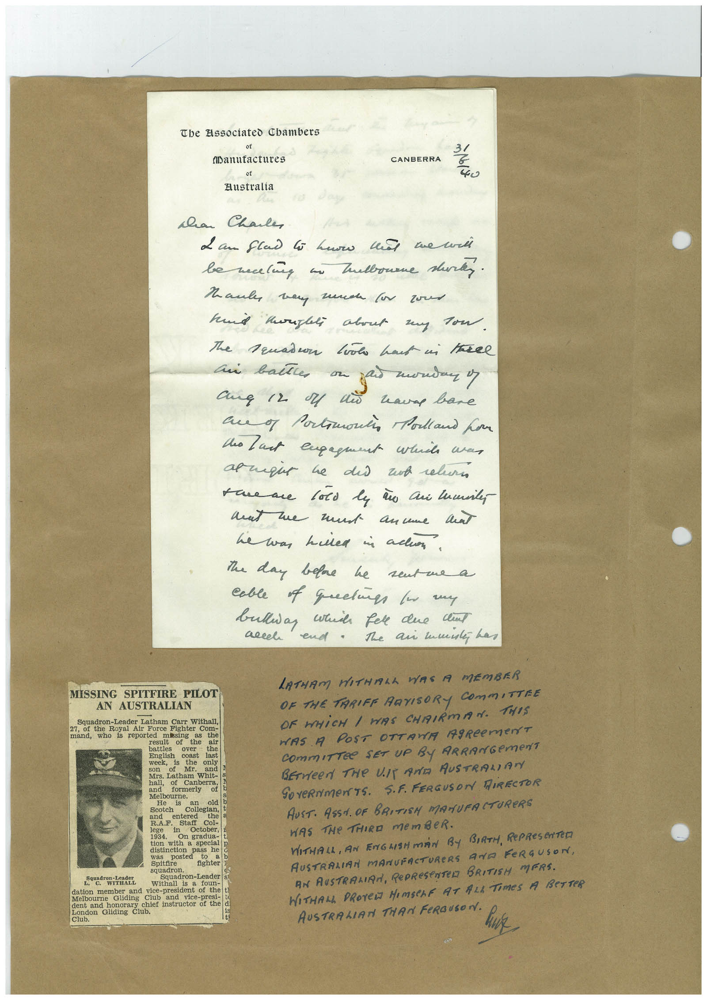

Book 1 · scan 061


Description
Transcription
Context
Review notes
Compare the machine draft with the scan. Handwriting and names need human review.
Artifacts
Edit the artifacts field in this note’s frontmatter to change these records. This summary is generated.
B01-S061-A01 — Letter, Newspaper clipping & Handwritten note — Book 1, scan 061
Types: Typed document, Letter, Newspaper clipping, Handwritten note
Scope: Whole scanned page; individual items can be split out during review.
Caption: Not mapped yet.
Caption source: Not recorded yet.
Caption status: unmapped
Machine transcription
Tbe Elssociated Chambers (Manutactures of Australia CANBERRA 31 40 han Chale Mane way much (in zoe hund taglei about my Tow. The Truadur Look haut ui havel an ballle on ang 12 M ni waves bare au of Portmontin Polland hor to last engaget while avan save me too ly a Cui lumines mat me mut anume and he was helled a all. the day before he sent me a cable of quetie to my bulliay which fere due clint accel end. The ai manley has MISSING SPITFIRE PILOT AN AUSTRALIAN Squadron-Leader Latham Carr Withall, 27, of the Royal Air Force Fighter Com- mand, who is reported missing the the battles over English the coast WONK last Mr. only and Sors, Latham Whit and formerly Melbourne. He an old Scotch and Colegian, entered the a lege Staff Col- 1934. tion with a special p was pass he posted Spitfire to fighter Son stores, Squadron-Leader Withall is foun- dation member and vice-president of the t) Melbourne Gliding Club and vice-presi- dent and honorary chief instructor of the London Gliding Club. LATHAM HITHALA WAS A MEMBER OR THE TARIFF ARTISORY COMMITTRE OF WHICH / WAS CHAIRMAN. THIS HAS A POST OTTAWA AgReeMeNT CommITTee SET uP By ARRANGemeNT BErVeeN THe UIT AND AUSTRALIANY GOVeRNMeNTS. S.F. FERGUSON HIRECTOR AUST. ASS. OF BRITISH MANUFACTUReRS WAS THe THIRD memBeR. WITHALL, AN ENGHSHMAN BY BIRTH, RePReSeNTeD AUSTRALIAN MANUFACTURERS AND FERGUSON, AN AUSTRALIRA, PePReSeNTeR BRITISH MERS. WITHAL PROTeD HIMSeLF AT ALL TIMeS A BeTTeR AUSTRALIATI THAN FeRGUSON.